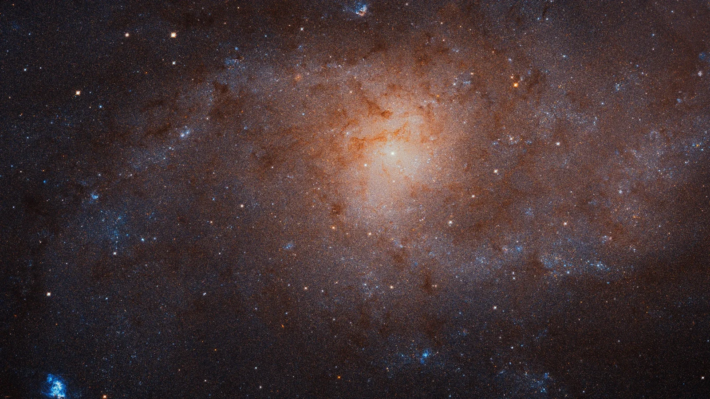

Triangulum Galaxy (M33)

Overview
The Triangulum Galaxy is a spiral galaxy about half the size of the Milky Way. It is the third-largest member of our Local Group, after Andromeda and the Milky Way. Triangulum is packed with young stars and glowing clouds of gas, including NGC 604, one of the largest star-forming regions known nearby. Under very dark skies, sharp-eyed observers can sometimes spot it without a telescope.
Interesting Facts
- Triangulum is part of the Local Group, the same family of galaxies that includes the Milky Way and Andromeda.
- Hubble's giant mosaic of Triangulum combines 54 separate telescope views.
Quick Facts
- Type: Spiral galaxy
- Distance from Earth: About 3 million light-years
- Size: About 60,000 light-years across
- Discovery: Cataloged by Charles Messier in 1764